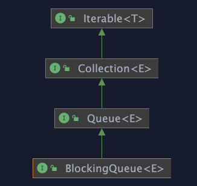
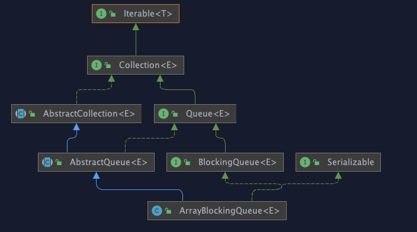
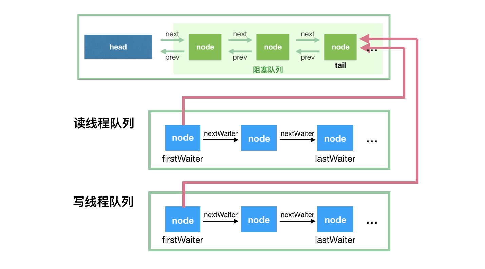
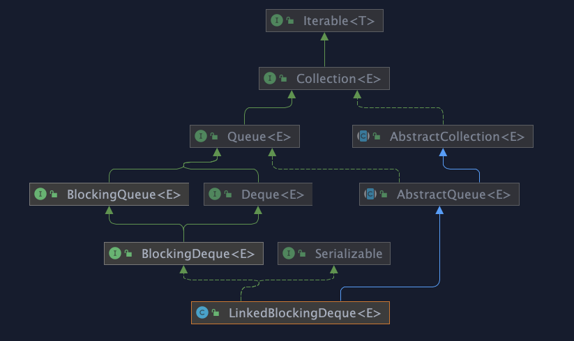
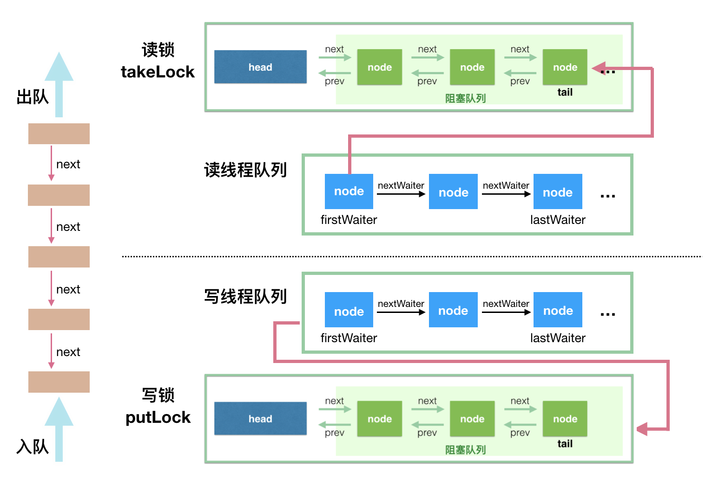
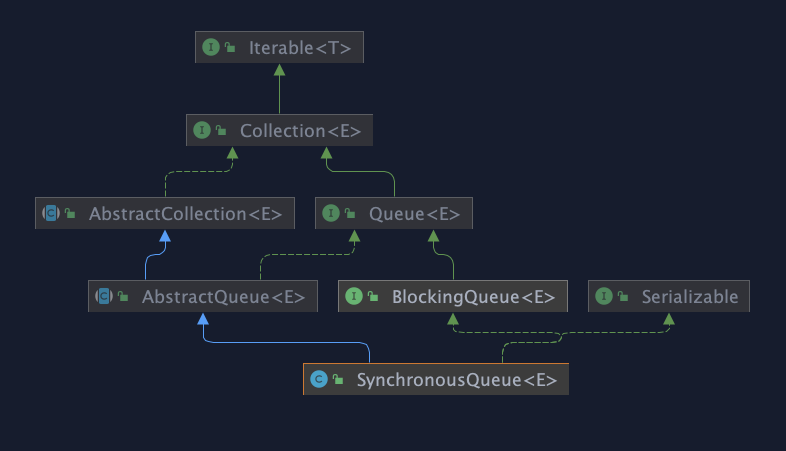
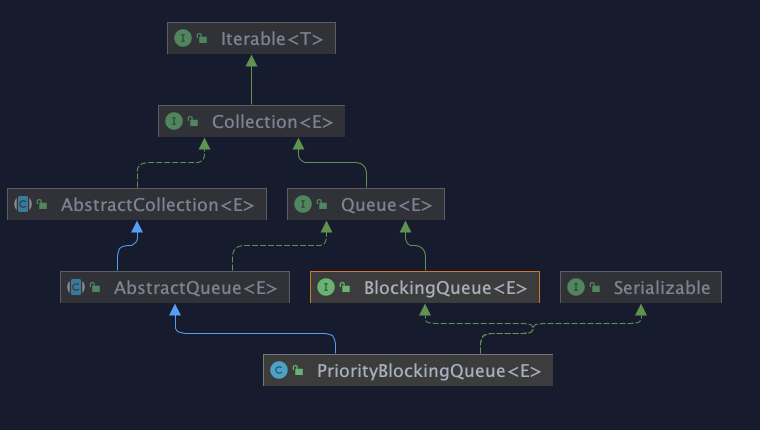

BlockingQueue
简介
BlockingQueue 支持：
获取队列元素时，如果队列为空，会阻塞等待队列中有元素再返回
添加元素时，如果队列已满，那么等到队列可以放入新元素时再放入
BlockingQueue 是一个接口，它的接口继承体系如下：

BlockingQueue 对插入操作、移除操作、获取元素操作提供了四种不同的方法用于不同的场景中使用：
抛出异常
返回特殊值（null 或 true/false，取决于具体的操作)
阻塞等待此操作，直到这个操作成功
阻塞等待此操作，直到成功或者超时指定时间
| Throws exception | Special value | Blocks | Times out | |
|---|---|---|---|---|
| Insert | add(e) | offer(e) | put(e) | offer(e, time, unit) |
| Remove | remove() | poll() | take() | poll(time, unit) |
| Examine | element() | peek() | not applicable | not applicable |
我们的关注点应该在 put(e) 和 take() 这两个阻塞方法
BlockingQueue add 、 offer 、 put 方法都不接受 null 值的插入，插入 null 值会报 NullPointerException 异常。null 值在BlockingQueue中只用于在队列为空时调用 poll 方法删除元素返回。如果允许插入 null 值的话，那获取的时候，就不能很好地用 null 来判断到底是代表失败，还是获取的值就是 null 值。
BlockingQueue 可能有界的，如果发现队列满了，那么 put 操作将会阻塞。 无界队列也不是真正的无界，它的容量是 Integer.MAX_VALUE
BlockingQueue 主要用于实现生产者-消费者模式，还支持 Collection 接口。 因此可以使用 remove(x) 从队列中删除任意元素。 但是，此类操作通常不会非常有效地执行，并且仅用于偶尔使用，例如取消排队的消息时。
BlockingQueue 的实现都是线程安全的，但是批量的集合操作如 addAll, containsAll, retainAll 和 removeAll 不一定是原子操作。如 addAll(c) 有可能在添加了一些元素后中途抛出异常，此时 BlockingQueue 中已经添加了部分元素，这个是允许的，取决于具体的实现。
BlockingQueue 不支持 close 或 shutdown 等关闭操作，因为开发者可能希望不会有新的元素添加进去，此特性取决于具体的实现，不做强制约束。
BlockingQueue 在生产者-消费者的场景中，是支持多消费者和多生产者的，例如：
class Producer implements Runnable {
private final BlockingQueue queue;
Producer(BlockingQueue q) { queue = q; }
public void run() {
try {
while (true) { queue.put(produce()); }
} catch (InterruptedException ex) { ... handle ...}
}
Object produce() { ... }
}
class Consumer implements Runnable {
private final BlockingQueue queue;
Consumer(BlockingQueue q) { queue = q; }
public void run() {
try {
while (true) { consume(queue.take()); }
} catch (InterruptedException ex) { ... handle ...}
}
void consume(Object x) { ... }
}
class Setup {
void main() {
BlockingQueue q = new SomeQueueImplementation();
Producer p = new Producer(q);
Consumer c1 = new Consumer(q);
Consumer c2 = new Consumer(q);
new Thread(p).start();
new Thread(c1).start();
new Thread(c2).start();
}
}
实现
ArrayBlockingQueue

ArrayBlockingQueue 是 BlockingQueue 接口的有界队列实现类，底层采用数组来实现。所以创建的时候一定要队列容量，如
BlockingQueue arrayBlockingQueue = new ArrayBlockingQueue(10);
ArrayBlockingQueue 的并发控制采用 可重入锁来控制，其内部利用 一个 ReentrantLock 和相应的两个 condition来实现
/*
* Concurrency control uses the classic two-condition algorithm
* found in any textbook.
*/
/** Main lock guarding all access */
final ReentrantLock lock;
/** Condition for waiting takes */
private final Condition notEmpty;
/** Condition for waiting puts */
private final Condition notFull;
如果你对 AQS 以及 ReentrantLock 和 Condition比较了解的话就很容易理解 BlockingQueue的实现了，如果不了解的话，建议学习路径为:
AQS —> ReentrantLock—>Condition
ArrayBlockingQueue 实现并发同步的原理就是，读操作和写操作都需要获取到 AQS 独占锁才能进行操作。
如果队列为空，这个时候读操作的线程进入到读线程等待队列排队，等待写线程写入新的元素后，唤醒读线程队列的第一个等待线程。
如果队列已满，这个时候写操作的线程进入到写线程等待队列排队，等待读线程将队列元素移除腾出空间后，唤醒写线程队列的第一个等待线程。

LinkedBlockingDeque

底层基于单向链表实现的阻塞队列，可以当做无界队列也可以当做有界队列来使用
/**
* Creates a {@code LinkedBlockingDeque} with a capacity of
* {@link Integer#MAX_VALUE}.
*/
public LinkedBlockingDeque() {
this(Integer.MAX_VALUE);
}
/**
* Creates a {@code LinkedBlockingDeque} with the given (fixed) capacity.
*
* @param capacity the capacity of this deque
* @throws IllegalArgumentException if {@code capacity} is less than 1
*/
public LinkedBlockingDeque(int capacity) {
if (capacity <= 0) throw new IllegalArgumentException();
this.capacity = capacity;
}
/**
* Creates a {@code LinkedBlockingDeque} with a capacity of
* {@link Integer#MAX_VALUE}, initially containing the elements of
* the given collection, added in traversal order of the
* collection's iterator.
*
* @param c the collection of elements to initially contain
* @throws NullPointerException if the specified collection or any
* of its elements are null
*/
public LinkedBlockingDeque(Collection<? extends E> c) {
this(Integer.MAX_VALUE);
addAll(c);
}
主要属性
/**
* Pointer to first node.
* Invariant: (first == null && last == null) ||
* (first.prev == null && first.item != null)
*/
transient Node<E> first;
/**
* Pointer to last node.
* Invariant: (first == null && last == null) ||
* (last.next == null && last.item != null)
*/
transient Node<E> last;
/** Number of items in the deque */
private transient int count;
/** Maximum number of items in the deque */
private final int capacity;
/** Main lock guarding all access */
final ReentrantLock lock = new ReentrantLock();
/** Condition for waiting takes */
private final Condition notEmpty = lock.newCondition();
/** Condition for waiting puts */
private final Condition notFull = lock.newCondition();
这里用了两个锁，两个 Condition，简单介绍如下：
takeLock 和 notEmpty 怎么搭配： 如果要获取（take）一个元素，需要获取 takeLock 锁，但是获取了锁还不够，如果队列此时为空，还需要队列不为空（notEmpty）这个条件（Condition）。
putLock 需要和 notFull 搭配： 如果要插入（put）一个元素，需要获取 putLock 锁，但是获取了锁还不够，如果队列此时已满，还需要队列不是满的（notFull）这个条件（Condition）。

至于为什么 ArrayBlockingQueue 用一把锁，LinkedBlockingQueue用两把锁，这里有一个讨论：https://stackoverflow.com/questions/11015571/arrayblockingqueue-uses-a-single-lock-for-insertion-and-removal-but-linkedblocki
Executors.newFixedThreadPool() 使用了这个队列
SynchronousQueue

一个不存储元素的阻塞队列。每个插入操作必须等到另一个线程调用移除操作，否则插入操作一直处于阻塞状态，吞吐量通常要高于LinkedBlockingQueue，静态工厂方法 Executors.newCachedThreadPool使用了这个队列。
A blocking queue in which each insert operation must wait for a corresponding remove operation by another thread, and vice versa. A synchronous queue does not have any internal capacity, not even a capacity of one. You cannot peek at a synchronous queue because an element is only present when you try to remove it; you cannot insert an element (using any method) unless another thread is trying to remove it; you cannot iterate as there is nothing to iterate. The head of the queue is the element that the first queued inserting thread is trying to add to the queue; if there is no such queued thread then no element is available for removal and poll() will return null. For purposes of other Collection methods (for example contains), a SynchronousQueue acts as an empty collection. This queue does not permit null elements.
它是一个特殊的队列，它的名字其实就蕴含了它的特征 - - 同步的队列。为什么说是同步的呢？这里说的并不是多线程的并发问题，而是因为当一个线程往队列中写入一个元素时，写入操作不会立即返回，需要等待另一个线程来将这个元素拿走；同理，当一个读线程做读操作的时候，同样需要一个相匹配的写线程的写操作。这里的 Synchronous 指的就是读线程和写线程需要同步，一个读线程匹配一个写线程。
你不能在 SynchronousQueue 中使用 peek 方法（在这里这个方法直接返回 null），peek 方法的语义是只读取不移除，显然，这个方法的语义是不符合 SynchronousQueue 的特征的。SynchronousQueue 也不能被迭代，因为根本就没有元素可以拿来迭代的。虽然 SynchronousQueue 间接地实现了 Collection 接口，但是如果你将其当做 Collection 来用的话，那么集合是空的。当然，这个类也是不允许传递 null 值的（并发包中的容器类好像都不支持插入 null 值，因为 null 值往往用作其他用途，比如用于方法的返回值代表操作失败）。
因为SynchronousQueue没有存储功能，因此put和take会一直阻塞，直到有另一个线程已经准备好参与到交付过程中。仅当有足够多的消费者，并且总是有一个消费者准备好获取交付的工作时，才适合使用同步队列。
举例： 插入数据的线程和获取数据的线程，交替执行
public class SynchronousQueueExample {
static class SynchronousQueueProducer implements Runnable {
protected BlockingQueue<String> blockingQueue;
final Random random = new Random();
public SynchronousQueueProducer(BlockingQueue<String> queue) {
this.blockingQueue = queue;
}
@Override
public void run() {
while (true) {
try {
String data = UUID.randomUUID().toString();
System.out.println("Put: " + data);
blockingQueue.put(data);
Thread.sleep(1000);
} catch (InterruptedException e) {
e.printStackTrace();
}
}
}
}
static class SynchronousQueueConsumer implements Runnable {
protected BlockingQueue<String> blockingQueue;
public SynchronousQueueConsumer(BlockingQueue<String> queue) {
this.blockingQueue = queue;
}
@Override
public void run() {
while (true) {
try {
String data = blockingQueue.take();
System.out.println(Thread.currentThread().getName()
+ " take(): " + data);
Thread.sleep(2000);
} catch (InterruptedException e) {
e.printStackTrace();
}
}
}
}
public static void main(String[] args) {
final BlockingQueue<String> synchronousQueue = new SynchronousQueue<String>();
SynchronousQueueProducer queueProducer = new SynchronousQueueProducer(
synchronousQueue);
new Thread(queueProducer).start();
SynchronousQueueConsumer queueConsumer1 = new SynchronousQueueConsumer(
synchronousQueue);
new Thread(queueConsumer1).start();
SynchronousQueueConsumer queueConsumer2 = new SynchronousQueueConsumer(
synchronousQueue);
new Thread(queueConsumer2).start();
}
}
SynchronousQueue的以下方法很有趣：
iterator() 永远返回空，因为里面没东西。
peek() 永远返回null。
put() 往queue放进去一个element以后就一直wait直到有其他thread进来把这个element取走。
offer() 往queue里放一个element后立即返回，如果碰巧这个element被另一个thread取走了，offer方法返回true，认为offer成功；否则返回false。
offer(2000, TimeUnit.SECONDS) 往queue里放一个element但是等待指定的时间后才返回，返回的逻辑和offer()方法一样。
take() 取出并且remove掉queue里的element（认为是在queue里的。。。），取不到东西他会一直等。
poll() 取出并且remove掉queue里的element（认为是在queue里的。。。），只有到碰巧另外一个线程正在往queue里offer数据或者put数据的时候，该方法才会取到东西。否则立即返回null。
poll(2000, TimeUnit.SECONDS) 等待指定的时间然后取出并且remove掉queue里的element,其实就是再等其他的thread来往里塞。
isEmpty()永远是true。
remainingCapacity() 永远是0。
remove()和removeAll() 永远是false。
Executors.newCachedThreadPool 为什么使用 SynchronousQueue ？
在使用SynchronousQueue作为工作队列的前提下，客户端代码向线程池提交任务时，而线程池中又没有空闲的线程能够从SynchronousQueue队列实例中取一个任务，那么相应的offer方法调用就会失败（即任务没有被存入工作队列）。此时，ThreadPoolExecutor会新建一个新的工作者线程用于对这个入队列失败的任务进行处理（假设此时线程池的大小还未达到其最大线程池大小maximumPoolSize）
可以参考ThreadPoolExecutor 的源码
public void execute(Runnable command) {
if (command == null)
throw new NullPointerException();
/*
* Proceed in 3 steps:
*
* 1. If fewer than corePoolSize threads are running, try to
* start a new thread with the given command as its first
* task. The call to addWorker atomically checks runState and
* workerCount, and so prevents false alarms that would add
* threads when it shouldn't, by returning false.
*
* 2. If a task can be successfully queued, then we still need
* to double-check whether we should have added a thread
* (because existing ones died since last checking) or that
* the pool shut down since entry into this method. So we
* recheck state and if necessary roll back the enqueuing if
* stopped, or start a new thread if there are none.
*
* 3. If we cannot queue task, then we try to add a new
* thread. If it fails, we know we are shut down or saturated
* and so reject the task.
*/
int c = ctl.get();
if (workerCountOf(c) < corePoolSize) {
if (addWorker(command, true))
return;
c = ctl.get();
}
if (isRunning(c) && workQueue.offer(command)) {
int recheck = ctl.get();
if (! isRunning(recheck) && remove(command))
reject(command);
else if (workerCountOf(recheck) == 0)
addWorker(null, false);
}
else if (!addWorker(command, false))
reject(command);
}
再重复一遍：SynchronousQueue它将任务直接提交给线程而不保持它们。如果不存在可用于立即运行任务的线程，则试图把任务加入队列将失败，因此会构造一个新的线程。
线程数会随着任务数量变化自动扩张和缩减，可以灵活回收空闲线程（ThreadPoolExecutor回收工作线程，一条线程getTask()返回null，就会被回收。），用SynchronousQueue队列整好保证了CachedTheadPool的特点。
小结
不像ArrayBlockingQueue或LinkedListBlockingQueue，SynchronousQueue内部并没有数据缓存空间，你不能调用peek()方法来看队列中是否有数据元素，因为数据元素只有当你试着取走的时候才可能存在，不取走而只想偷窥一下是不行的，当然遍历这个队列的操作也是不允许的。队列头元素是第一个排队要插入数据的线程，而不是要交换的数据。数据是在配对的生产者和消费者线程之间直接传递的，并不会将数据缓冲数据到队列中。可以这样来理解：生产者和消费者互相等待对方，握手，然后一起离开。
SynchronousQueue的一个使用场景是在线程池里。Executors.newCachedThreadPool()就使用了SynchronousQueue，这个线程池根据需要（新任务到来时）创建新的线程，如果有空闲线程则会重复使用，线程空闲了60秒后会被回收。
PriorityBlockingQueue

PriorityBlockingQueue是一个无限容量的阻塞队列,PriorityBlockingQueue 指定初始的队列大小后，后面插入元素的时候，如果空间不够的话会自动扩容。
内部实现是数组，最长也不会超过 Integer.MAX_VALUE - 8
/**
* The maximum size of array to allocate.
* Some VMs reserve some header words in an array.
* Attempts to allocate larger arrays may result in
* OutOfMemoryError: Requested array size exceeds VM limit
*/
private static final int MAX_ARRAY_SIZE = Integer.MAX_VALUE - 8;
其并发控制采用的是 ReentrantLock。
简单地说，它就是 PriorityQueue 的线程安全版本。不可以插入 null 值，同时，插入队列的对象必须是可比较大小的（comparable），否则报 ClassCastException 异常。它的插入操作 put 方法不会 block，因为它是无界队列（take 方法在队列为空的时候会阻塞）。
PriorityBlockingQueue排序是通过最小堆实现的，可以通过堆排序排序算法（十大经典排序算法）了解下堆的实现。
小结
PriorityBlockingQueue是一个数组实现的无限制容量的优先级阻塞队列
默认初始容量为11，容量不够时可进行扩容操作
通过平衡二叉最小堆实现优先级排列
take、poll方法出队或drainTo转移的集合才是有序的
总结
JDK 8 中提供了七个阻塞队列可供使用
ArrayBlockingQueue：一个由数组结构组成的有界阻塞队列。LinkedBlockingQueue：一个由链表结构组成的无界阻塞队列。PriorityBlockingQueue：一个支持优先级排序的无界阻塞队列。DelayQueue：一个使用优先级队列实现的无界阻塞队列。SynchronousQueue：一个不存储元素的阻塞队列。LinkedTransferQueue：一个由链表结构组成的无界阻塞队列。LinkedBlockingDeque：一个由链表结构组成的双向阻塞队列。